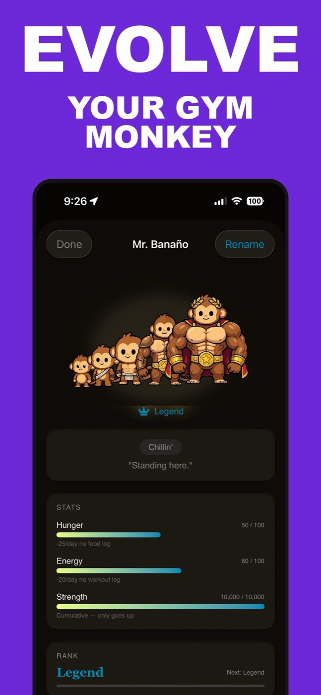

The Best Workout Tracker Apps for iPhone, Actually Tested
Search for the best workout tracker apps for iPhone and you get fifteen-app listicles written by people who clearly never finished a training block in any of them. This is the short, tested version: Hevy, Strong, Jefit, Fitbod, and our own app, Monolift, each judged on what it's actually best at. One disclosure up front — we build Monolift, so we claim exactly one slot for it and tell you plainly when a competitor is the better install.
- Hevy — best free tier of the structured loggers, and the only good social feed.
- Strong — the classic. Simple, quiet, with a pay-once lifetime option.
- Jefit — biggest exercise library; free with ads.
- Fitbod — generates workouts for you from your equipment; subscription only.
- Monolift — fastest logging: plain-text notes plus drag-to-dial, about 2 seconds a set. Ours, so grade the bias.
What a workout tracker app on iPhone actually needs to do
Every app here can store sets and reps. The differences show up mid-workout, so that's where we tested. Four things separate a tracker you keep from a tracker you delete in March:
- Logging speed between sets. You have 90 seconds of rest and chalk on your hands. Every extra tap and keyboard pop-up gets paid for 20+ times a session.
- A rest timer you can see with the phone locked. If you have to reopen the app to check it, you won't.
- Charts and PR detection that answer "am I actually progressing?" without exporting to a spreadsheet.
- Easy in, easy out. Getting your current program into the app should take minutes, not an evening.
If you're still deciding what's worth recording in the first place, read how to track workouts first — the habit matters more than the app.
The best workout tracker apps for iPhone in 2026
Hevy — best if you want a social feed
Hevy is the most complete package here and the easiest default recommendation. It's a polished structured logger with a fast routine builder, a large exercise library, solid per-exercise charts, and apps on iOS, Android, the web, and Apple Watch. The free tier is unusually generous: unlimited workout logging, with the caps landing on routines and custom exercises instead. And the social feed — follow friends, see their sessions, leave likes — is a genuine differentiator no other serious logger matches.
The honest knocks: logging is still the classic loop of tap field, summon keyboard, type, confirm, and the feed is either motivation or noise depending on your temperament. As of mid-2026, Hevy Pro is also among the cheapest paid tiers in fitness apps — a real point in its favor. We've written a full head-to-head in Hevy vs Strong if it's down to those two.
Strong — the classic weightlifting app for iPhone
Strong has been the default weightlifting app for iPhone for over a decade, and it still earns the spot by staying out of your way: no feed, no gamification, a clean structured log with lifter-specific touches like the plate calculator and warm-up sets. The free version logs unlimited workouts but caps you at three routines; upgrading offers a one-time lifetime purchase as of mid-2026, which is rare now and the rational buy if you hate subscriptions on principle.
The knocks: development moves slowly — stability to some, stagnation to others — and set entry is the same keyboard-driven loop as Hevy's. If the three-routine cap or the pace bothers you, we've collected Strong app alternatives worth a look.
Jefit — biggest exercise library
Jefit's pitch is the database: thousands of exercises with instructions and animations, plus a huge catalog of community programs. If you run high-volume bodybuilding splits and want every cable and machine variation pre-loaded rather than typed in as a custom exercise, that library is a real advantage, and the free version is genuinely usable.
The trade-offs: the free tier is ad-supported (the Elite subscription removes ads and unlocks deeper reports, as of mid-2026), and the interface is the busiest of the five — more screens and more taps per set than anything else here. If your program is six barbell lifts, the library is dead weight.
Fitbod — best if you want workouts generated for you
Fitbod answers a different question. Not "how do I log my program?" but "what should I do today?" Tell it your equipment and it builds the session, then adapts to what it thinks has recovered. For hotel gyms, unfamiliar equipment, or people who simply don't want to program their own training, it's the strongest option in this list.
The trade-offs: there's no meaningful free tier — a short trial, then subscription only, as of mid-2026 — and the algorithm needs a few weeks of logged sessions before its suggestions stop feeling generic. If you already run your own program, Fitbod is the wrong tool: it wants to drive, and you'll spend your time overriding it.
Monolift — fastest logging for serious lifters
Monolift is ours, and it exists because of one number: how long it takes to log a set. In Monolift a workout is just a plain-text note:
Bench Press: 135 lbs 8, 8, 6
Incline DB Press: 60 lbs 10, 10, 9
Cable Fly: 45 lbs 12, 12
The colon marks the exercise, commas separate sets, and the note live-renders into color-coded cards with tappable weight and rep pills as you type. Between sets you don't type at all: long-press any number and slide to change it — drag-to-dial — with a plate mode that steps through real plate loads with a haptic tick. About two seconds a set, no keyboard. Rest timers run as Lock Screen Live Activities, and since v1.6 the alarm buzzes even with the app closed. Behind the log you get per-exercise charts and automatic weight and rep PR detection, which is most of what tracking progressive overload actually requires.

Beyond the log: an AI coach (Pro, included in the trial) reads your actual training history — it can build a workout that saves to your notes only after you approve it, flag plateaus and suggest deloads, and answer questions grounded in your numbers rather than generic advice (we compare it to pasting your log into a chatbot in AI coach vs ChatGPT). There's also nutrition logging — photo or text description in, estimated calories and macros out, plus barcode and USDA search — along with body-weight trends, water, cardio estimates, and Face ID-locked progress photos. And Banaño, a pixel gym monkey who ranks up as you log; he's seasoning, not the sales pitch, and if that mechanic is what actually gets you to the gym, see gamified workout apps.

Now the honest list, because every app above got one. Monolift is iPhone-only (iOS 17+) and English-only: no Android, no web version, no Apple Watch app, and no automatic Apple Health sync. After the 7-day full-access trial it's a subscription — there is no free-forever tier; the App Store shows pricing. And there's no automatic import from Hevy or Strong: switching means retyping or pasting your program as text (minutes) — but years of in-app history stay behind, which is a real cost.
So, what is the best app for tracking workouts?
It depends on which friction you're removing. Side by side:
| App | Best for | Free version (mid-2026) | Logging style | Watch out for |
|---|---|---|---|---|
| Hevy | Social feed, cross-platform | Unlimited logging, capped routines | Structured forms + keyboard | Feed can be noise |
| Strong | The simple classic | Unlimited logging, 3 routines | Structured forms + keyboard | Slow development pace |
| Jefit | Huge exercise library | Usable, ad-supported | Structured, most taps per set | Busy interface |
| Fitbod | Auto-generated workouts | Trial only, then subscription | Follows its generated plan | Fights your own programming |
| Monolift | Fastest set logging | 7-day full-access trial, then subscription | Plain text + drag-to-dial, ~2s a set | iPhone-only, no Watch app, no free tier |
Our verdicts, plainly. If logging with friends is what keeps you consistent, Hevy — nothing else comes close on social. If you want the app equivalent of a reliable barbell, Strong is still a great answer, and for many people the best weightlifting app for iPhone in 2026 is whichever of those two matches their temperament. Jefit if the library is the draw; Fitbod if you want the thinking done for you.
The slot we claim: the best workout tracker for serious lifters whose bottleneck is the logging itself. If you already know your program and the structured apps feel like filling in a form between sets — if you've ever quietly gone back to Apple Notes or paper because it was faster — Monolift keeps that speed and adds the charts, PRs, and rest timers you were giving up. Same reasoning applies if you're eyeing the exits from an app you already use: see Hevy alternatives for feed fatigue or Strong app alternatives for routine-cap fatigue.
Whichever you pick, install one. Every app in this list beats the un-reviewed sea of trackers below them, and all five beat not logging at all.
If two seconds a set is the feature your current tracker is missing, the trial is the fastest way to find out.
Download on theApp StoreFree 7-day trial · iPhone · iOS 17+